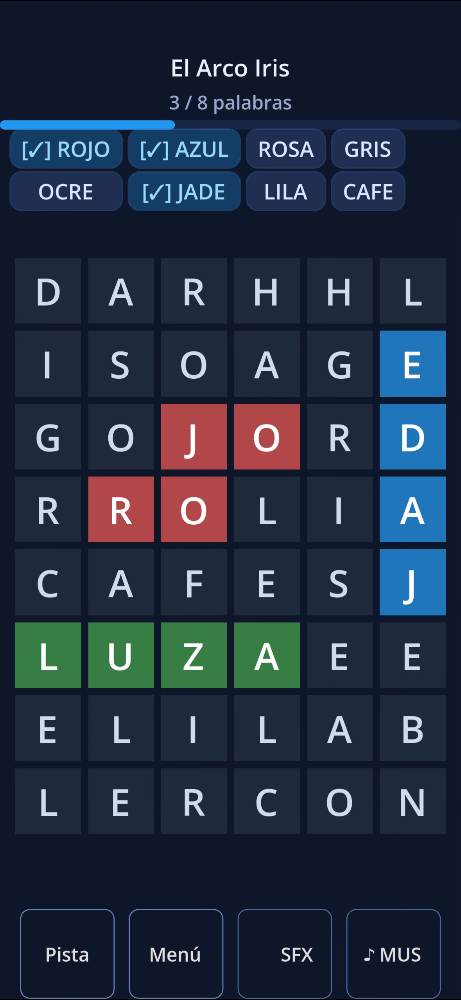
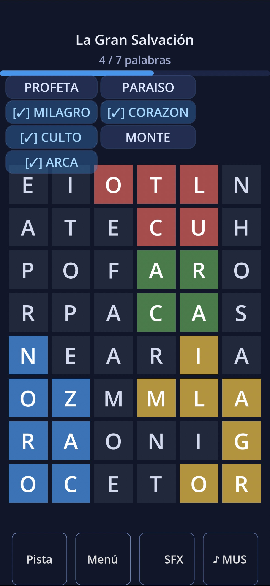

Puzzles de letras bíblicas en español. Sopas de María — creado con amor, diseñado para relajar el alma y desafiar la mente.
Available on the App Store

Sopas de María nació de un gesto de amor: un juego creado para una madre que necesitaba distracción y consuelo durante su recuperación. Hoy, ese mismo espíritu de cuidado está presente en cada puzzle.
Es un juego de sopas de letras bíblicas completamente en español, diseñado para quienes buscan un momento de calma y reflexión. Cada nivel está lleno de palabras tomadas de las Escrituras, ofreciendo un desafío mental con un propósito más profundo.
La app incluye una selección completa de puzzles desde el primer momento, con paquetes de niveles adicionales disponibles dentro de la app.